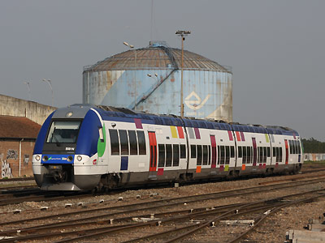

Automoteurs Bimode
Un automoteur bimode est un engin apte de circuler en autonomie grâce à un moteur diésel mais aussi capable de tirer son énergie depuis une caténaire. L'idée n'est pas nouvelle puisque le PO-Midi avait planché sur les XAT 1001 et 1002 dit "Amphibies" à la fin des années 1930. Seulement, la fusion des grands réseaux dans la SNCF naissante, la guerre mondiale ou bien la difficile fiabilisation de deux prototypes n'avait pas permis de transformer l'essai. Les XAT avaient été dépossédés de leur équipement de commande électrique en 1952 et poussés à la retraite par les autorails unifiés dès 1959. Depuis tous les automoteurs exploités en France avaient des transmissions purement mécaniques.
Il fallu attendre près de cinquante ans pour que le bimode revienne au goût du jour. La conception des AGC par Bombardier sur un modèle modulaire et prévoyant une transmission diésel-électrique pour les engins autonomes, permettait dès le départ d'imaginer une déclinaison Bi-mode. Alors que les questions environnementales ressurgissent mais que de grands chantiers d'électrification ne peuvent pas être lancés faute de budget, cette solution est idéale pour les parcours mixtes comptant de nombreux kilomètres sous caténaires.
Les premiers AGC bimodes n'étaient que monocourant en raison de devis de masse ne permettant pas d'emporter un transformateur dans une formation à trois caisses. Les B 81500 étaient ainsi les premiers engins monocourants construits depuis 30 ans. Cependant, ils seront transformables en "Bibi", c'est à dire Bimode-Bicourant par l'ajout d'une quatrième caisse possédant la chaine de traction 25 kV 50 Hz.
Alstom prépare de son côté le Régiolis, répondant au cahier des charges du porteur polyvalent, qui sera également disponible en bimode.
B 81500 AGC
B 82500 AGC Bibi
B 83500 Regiolis péri-urbain
B 84500 Regiolis régional

Le BGC 82559 à Nangis (08/05/2010)